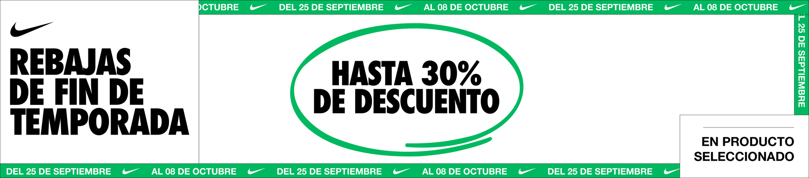

Esta empresa que va recién creciendo tiene ciertos objetivos, iremos de varios puntos.Nosotros
queremos expandir nuetros mercado y locales por lo pronto en alrededores, darle zapatos
de calidad a nuestros clientes sin problema alguno, brindarles la mejor atención y que la
próxima vez que piensen en comprar tenis, seameos su primera opción.
Esto solo es el inicio y hay mucho camino por delante, esperemos ser tu mejor opción
y muy pronto tu mejor proveedor, !Suerte y gracias por visitarnos¡

Zapatería del Futuro: Caminando Hacia Nuestra Visión
Imagina un futuro donde tu zapatería, la que lleva tu nombre y pasión, se convierte en un
faro de innovación y estilo. Tu visión de una zapatería del futuro no solo trasciende las e
xpectativas, sino que redefine por completo la experiencia de compra de calzado creando un dest
ino único para los amantes del calzado.
1. Personalización y Diseño Exclusivo: En tu zapatería del futuro, la personalización será
la regla, no la excepción. Los clientes podrán crear zapatos únicos, no solo en términos de ajust
e y comodidad, sino también de estilo. Con tecnología de vanguardia y artesanos expertos, podrán d
iseñar zapatos que reflejen su personalidad y gusto, creando verdaderas obras maestras para sus pies.
2. Experiencia de Compra de Última Generación: Las tiendas físicas serán verdaderos santuarios
del calzado. Los clientes entrarán en un ambiente donde la tecnología de realidad aumentada permi
tirá que los zapatos cobren vida, donde podrán ver cómo se verán en diferentes situaciones antes de
tomar una decisión. Además, los probadores virtuales garantizarán que cada par se ajuste perfecta
mente.
3. Entrega Personalizada y Atención Continua: La experiencia del cliente no se detendrá en la
tienda. Ofrecerás entregas personalizadas y atención continua, asegurándote de que cada par de
zapatos sea un ajuste perfecto incluso después de la compra.
En esta visión de futuro, tu zapatería no será solo un negocio, será una marca que representa la e
xcelencia en el calzado y la moda sostenible. Será un lugar donde las historias de tus clientes se
fusionarán con los zapatos que creas, y donde la innovación y la pasión por el calzado se unirán pa
ra crear un legado duradero. En este futuro, tu zapatería será un faro de creatividad y calidad, un
testimonio de tu visión y compromiso con el arte del calzado.
 Iker Sneackers
Iker Sneackers